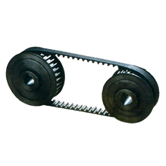

Products & Services
|
|
Products
We
offer a whole variety of gear boxes for power transmission systems. A
range of gears, gear boxes, geared motors are fabricated from superior
grade components. Our range of mechanized solutions includes:
timing Pulleys
We bring forth an ample assortment of superlative mechanical Timing pulleys
that are available in varied sizes and models. Its Light weight and
high accuracy, has helped us to stand as the most prominent timing belt
pulleys manufacturer and supplier, based in India. To ensure the
durability of timing pulleys, they are manufactured from the genuine
quality raw materials. Our timing pulleys have high tensile strength
and efficiency. They have the capability to provide continuous output
without slipping, speed variation and skipping. They provide excellent
performance at high speed and require low maintenance, thus it saves
your money and time.

Drive are available in various pitches :D
- Imperial (INCH) MXL (0.080"), LT (40DP), XL (0.200"), L (0.375"), H (0.500"), XH
(0.875") and XXH (1.250") pitch in standard belt width. Tooth profile
is Trapezoidal. ISO-DIN 5294-1979.
- Metric (mm) T2.5, TSF T10, T20, ATS, ATIO, AT20 Pitch Trapezoidal tooth profile, ISO-DIN 7721-1979.
- High Torque Drive (HTD), 3m, 5m, 8m, 14m, and 20m Pitch. Curvilinear / round tooth profile
- Super Torque Drive (STD), S3M, S5M, S8M, S14M pitches Parabolic tooth profile
|
|

|
|